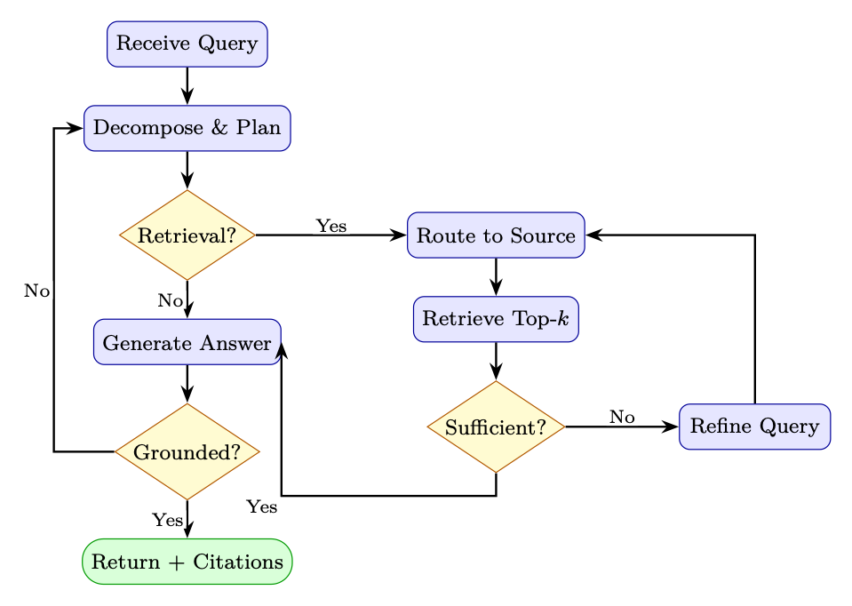

<!doctype html>
<html lang="zh-CN">
<head>
  <meta charset="utf-8" />
  <meta name="viewport" content="width=device-width, initial-scale=1" />
  <title>检索增强生成（RAG） | 智能体式 AI 漫游指南</title>
  <meta name="description" content="组织检索、重排、生成、评估与智能体式 RAG 的系统实践。" />
  <meta property="og:title" content="检索增强生成（RAG） | 智能体式 AI 漫游指南" />
  <meta property="og:description" content="组织检索、重排、生成、评估与智能体式 RAG 的系统实践。" />
  <meta property="og:type" content="article" />
  <link rel="canonical" href="https://conanxin.github.io/hitchhikers-guide-agentic-ai-zh/" />
  <link rel="stylesheet" href="../assets/css/main.css" />
  <link rel="stylesheet" href="../assets/css/article.css" />
  <link rel="stylesheet" href="../assets/css/responsive.css" />
</head>
<body class="article-page">
  <div class="reading-progress" id="reading-progress"></div>
  <header class="topbar">
    <a class="brand" href="../index.html"><span class="brand-mark">AST</span><span><strong>智能体式 AI 漫游指南</strong><small>结构化知识文档系统</small></span></a>
    <button class="nav-toggle" id="nav-toggle" aria-label="打开导航" aria-expanded="false"><span></span><span></span><span></span></button>
    <nav class="topnav" id="topnav"><a class="" href="../index.html">首页</a><a class="active" href="../chapters/index.html">章节</a><a class="" href="../glossary.html">术语表</a><a class="" href="../references.html">参考文献</a><a class="" href="../search.html">搜索</a><a class="" href="https://arxiv.org/pdf/2606.24937v1" target="_blank" rel="noopener">原 PDF</a></nav>
  </header>
  <main class="layout"><aside class="left-nav" id="left-nav"><div class="nav-section-title">语义目录</div><div class="nav-cluster"><strong>导读</strong><a class="chapter-link " href="../chapters/chapter-01.html"><span class="chapter-num">01</span><span>导读与前置说明</span></a><a class="chapter-link " href="../chapters/chapter-09.html"><span class="chapter-num">09</span><span>偏好优化变体</span></a></div><div class="nav-cluster"><strong>LLM 基础与系统</strong><a class="chapter-link " href="../chapters/chapter-02.html"><span class="chapter-num">02</span><span>LLM 架构和优化方法</span></a><a class="chapter-link " href="../chapters/chapter-03.html"><span class="chapter-num">03</span><span>LLM 的系统基础</span></a><a class="chapter-link " href="../chapters/chapter-12.html"><span class="chapter-num">12</span><span>大规模系统架构与基础设施</span></a></div><div class="nav-cluster"><strong>训练、强化学习与对齐</strong><a class="chapter-link " href="../chapters/chapter-04.html"><span class="chapter-num">04</span><span>强化学习简介</span></a><a class="chapter-link " href="../chapters/chapter-05.html"><span class="chapter-num">05</span><span>语言模型的强化学习基础</span></a><a class="chapter-link " href="../chapters/chapter-06.html"><span class="chapter-num">06</span><span>PPO：近端策略优化</span></a><a class="chapter-link " href="../chapters/chapter-07.html"><span class="chapter-num">07</span><span>DPO：直接偏好优化</span></a><a class="chapter-link " href="../chapters/chapter-08.html"><span class="chapter-num">08</span><span>GRPO：组相对策略优化</span></a><a class="chapter-link " href="../chapters/chapter-10.html"><span class="chapter-num">10</span><span>奖励模型训练</span></a><a class="chapter-link " href="../chapters/chapter-11.html"><span class="chapter-num">11</span><span>SFT 最佳实践与技术</span></a><a class="chapter-link " href="../chapters/chapter-14.html"><span class="chapter-num">14</span><span>大型推理模型的强化学习</span></a></div><div class="nav-cluster"><strong>Agentic AI 系统</strong><a class="chapter-link " href="../chapters/chapter-13.html"><span class="chapter-num">13</span><span>LLM 智能体训练</span></a><a class="chapter-link " href="../chapters/chapter-16.html"><span class="chapter-num">16</span><span>智能体式 AI 简介</span></a><a class="chapter-link active" href="../chapters/chapter-17.html"><span class="chapter-num">17</span><span>检索增强生成（RAG）</span></a><a class="chapter-link " href="../chapters/chapter-18.html"><span class="chapter-num">18</span><span>智能体记忆系统</span></a><a class="chapter-link " href="../chapters/chapter-19.html"><span class="chapter-num">19</span><span>智能体执行框架：上下文管理与编排</span></a><a class="chapter-link " href="../chapters/chapter-20.html"><span class="chapter-num">20</span><span>智能体设计模式</span></a><a class="chapter-link " href="../chapters/chapter-21.html"><span class="chapter-num">21</span><span>智能体环境与基准</span></a><a class="chapter-link " href="../chapters/chapter-22.html"><span class="chapter-num">22</span><span>模型上下文协议（MCP）</span></a><a class="chapter-link " href="../chapters/chapter-23.html"><span class="chapter-num">23</span><span>智能体技能</span></a><a class="chapter-link " href="../chapters/chapter-24.html"><span class="chapter-num">24</span><span>智能体间通信（A2A）</span></a><a class="chapter-link " href="../chapters/chapter-25.html"><span class="chapter-num">25</span><span>多智能体系统</span></a><a class="chapter-link " href="../chapters/chapter-26.html"><span class="chapter-num">26</span><span>智能体开发框架</span></a><a class="chapter-link " href="../chapters/chapter-27.html"><span class="chapter-num">27</span><span>智能体式 UI 框架</span></a></div><div class="nav-cluster"><strong>推理与评估</strong><a class="chapter-link " href="../chapters/chapter-15.html"><span class="chapter-num">15</span><span>LLM 评估</span></a></div><div class="nav-cluster"><strong>参考与总结</strong><a class="chapter-link " href="../chapters/chapter-28.html"><span class="chapter-num">28</span><span>测验题与详解</span></a><a class="chapter-link " href="../chapters/chapter-29.html"><span class="chapter-num">29</span><span>速查表</span></a><a class="chapter-link " href="../chapters/chapter-30.html"><span class="chapter-num">30</span><span>结论与未来方向</span></a></div></aside><section class="content-shell">
        <article class="article-card" data-ast-source="../assets/data/clean_chapter_tree.json">
          <header class="article-header">
            <p class="part-label">Agentic AI 系统</p>
            <h1>检索增强生成（RAG）</h1>
            <p>组织检索、重排、生成、评估与智能体式 RAG 的系统实践。</p>
          </header>
          <aside class="component key-concepts-panel"><span class="component-label">Key Concepts</span><div class="concept-chip"><strong>智能体</strong><span>Agent</span><p>能够感知状态、规划行动、调用工具并迭代完成任务的系统单元。</p></div><div class="concept-chip"><strong>标记 / token</strong><span>Token</span><p>语言模型处理文本的基本离散单位。</p></div><div class="concept-chip"><strong>Transformer</strong><span>Transformer</span><p>以自注意力为核心的序列建模架构。</p></div><div class="concept-chip"><strong>注意力</strong><span>Attention</span><p>根据查询、键和值计算上下文加权表示的机制。</p></div><div class="concept-chip"><strong>强化学习</strong><span>Reinforcement Learning</span><p>通过奖励信号优化策略的学习范式。</p></div><div class="concept-chip"><strong>检索增强生成（RAG）</strong><span>Retrieval-Augmented Generation</span><p>先检索外部知识，再让模型基于上下文生成答案。</p></div><div class="concept-chip"><strong>策略</strong><span>Policy</span><p>在状态下选择动作或生成 token 的概率分布。</p></div><div class="concept-chip"><strong>轨迹</strong><span>Trajectory</span><p>智能体与环境交互形成的状态、动作、观察和奖励序列。</p></div></aside>
          <div class="article-body"><section class="ast-section" id="chapter-17-s01"><div class="component section-overview"><div><span class="component-label">Section Overview</span><h2>动机与问题陈述</h2><p>本节聚焦“动机与问题陈述”的定义、机制与工程含义。</p></div><div class="mini-concepts"><div class="concept-chip"><strong>检索增强生成（RAG）</strong><span>Retrieval-Augmented Generation</span><p>先检索外部知识，再让模型基于上下文生成答案。</p></div></div></div><div class="section-blocks"><p class="content-block paragraph">检索增强生成 （RAG）</p><p class="content-block paragraph">检索增强生成（RAG）[128]已成为最具实际影响力的技术之一 在生产中部署大型语言模型的技术。而不是仅仅依靠知识 RAG 在训练期间编码在模型权重中，为LLM配备了动态、可更新的外部 记忆——能够在广泛的知识范围内做出准确的、有根据的、可验证的反应—— 密集的任务。</p><p class="content-block paragraph">动机和问题陈述</p><p class="content-block paragraph">为什么LLM需要外部知识</p><p class="content-block paragraph">大型语言模型以参数方式存储知识——在运行期间压缩为数十亿个权重 训练。这造成了三个基本限制：</p><p class="content-block paragraph">1. 幻觉：模型自信地生成听起来合理但实际上不正确的结果 当查询超出其可靠知识范围时的陈述。</p><p class="content-block paragraph">2.知识陈旧性：训练数据有截止日期；模型无法了解事件， 训练后发生的论文或产品更新。</p><p class="content-block paragraph">3.领域特异性：通用模型缺乏对专有代码库的深入了解， 内部文件、专门法规或企业数据。</p><p class="content-block paragraph">参数知识与非参数知识</p><p class="content-block paragraph">我们可以形式化这两种知识源之间的区别。设 Mθ 表示一种语言</p><div class="component code-component"><div class="block-label">text</div><pre><code>参数为 θ 的模型，并令 D = {d1, d2, .。。 , dN} 是外部文档语料库。的</code></pre></div><p class="content-block paragraph">在每个范式下生成给定查询 q 的答案的概率为：</p><p class="content-block paragraph">Pparametric(a | q) = PMθ(a | q) (16.1)</p><div class="component formula-component" data-fallback="latex"><div class="block-label">公式</div><pre class="formula"><code>PRAG(a | q, D) = X</code></pre></div><p class="content-block paragraph">d ∈ D PMθ(a | q, d) Pret(d | q, D) (16.2)</p><p class="content-block paragraph">其中 Pret(d | q, D) 是文档的检索分布。 RAG 边缘化超过检索 证据，为非参数知识的生成奠定基础。</p><p class="content-block paragraph">图书馆的类比</p><p class="content-block paragraph">将参数LLM想象为一位学者，他记住了一个巨大的图书馆，但毕业了 几年前。 RAG 为该学者提供了一张借书卡——他们可以实时查找资料，引用 来源，并在他们需要检查参考而不是凭记忆猜测时予以确认。</p></div></section><section class="ast-section" id="chapter-17-s02"><div class="component section-overview"><div><span class="component-label">Section Overview</span><h2>RAG 核心架构</h2><p>本节聚焦“RAG 核心架构”的定义、机制与工程含义。</p></div><div class="mini-concepts"><div class="concept-chip"><strong>策略</strong><span>Policy</span><p>在状态下选择动作或生成 token 的概率分布。</p></div><div class="concept-chip"><strong>推理</strong><span>Inference</span><p>模型在部署或测试时生成输出的过程。</p></div></div></div><div class="section-blocks"><p class="content-block paragraph">何时使用 RAG、微调、长上下文</p><p class="content-block paragraph">表 16.1：决策指南：RAG、微调、长上下文</p><p class="content-block paragraph">标准 RAG 微调 长上下文 碎布+FT</p><div class="component formula-component" data-fallback="latex"><div class="block-label">公式</div><pre class="formula"><code>Knowledge updates frequently ✓ × × ✓ Need citations / grounding ✓ × ✓ ✓ Proprietary large corpus ✓ × × ✓ Adapt style / format × ✓ × ✓ Teach new reasoning skills × ✓ × ✓ Corpus fits in context window × × ✓ × Low latency required × ✓ × ×</code></pre></div><p class="content-block paragraph">常见的误解</p><p class="content-block paragraph">RAG 不能替代微调。微调教会模型如何推理和 回应； RAG 提供了推理的内容。它们是互补的。模型经过微调 良好地遵循说明将比基本模型更有效地使用检索到的上下文。</p><p class="content-block paragraph">核心RAG架构</p><p class="content-block paragraph">标准 RAG 系统由两个阶段组成：离线索引流水线，用于处理和 存储文档，以及提供查询服务的在线检索生成流水线。</p><p class="content-block paragraph">全流水线图</p><p class="content-block paragraph">图 16.1：端到端 RAG 架构。离线流水线（蓝色）索引文档一次；在线的 流水线（绿色/橙色）在推理时为每个查询提供服务。</p><p class="content-block paragraph">索引流水线</p><p class="content-block paragraph">文档加载。 文档以异构格式（PDF、HTML、Markdown、 DOCX，代码）。加载器提取干净的文本并保留元数据（源 URL、页码、部分 标题、时间戳）将与嵌入一起存储以进行过滤和引用。</p><p class="content-block paragraph">分块。 长文档必须被分割成适合嵌入模型的块 上下文窗口（通常为 512 个标记）并且语义一致。分块策略是其中之一 RAG 系统设计中影响最大的决策（参见第 16.4 节）。</p><p class="content-block paragraph">嵌入。</p><div class="component code-component"><div class="block-label">text</div><pre><code>使用嵌入将每个块 ci 编码为密集向量 ei = fphi(ci) εRd</code></pre></div><p class="content-block paragraph">模型 f。这些矢量与原始文本和元数据一起存储在矢量数据库中。</p><figure class="component figure-component"><figcaption>图示：来自原文档的结构、表格或公式区域。</figcaption></figure></div></section><section class="ast-section" id="chapter-17-s03"><div class="component section-overview"><div><span class="component-label">Section Overview</span><h2>检索方法</h2><p>本节聚焦“检索方法”的定义、机制与工程含义。</p></div><div class="mini-concepts"><div class="concept-chip"><strong>标记 / token</strong><span>Token</span><p>语言模型处理文本的基本离散单位。</p></div><div class="concept-chip"><strong>Transformer</strong><span>Transformer</span><p>以自注意力为核心的序列建模架构。</p></div></div></div><div class="section-blocks"><p class="content-block paragraph">检索</p><div class="component code-component"><div class="block-label">text</div><pre><code>给定一个查询 q，检索步骤将其编码为 q = fphi(q) 并通过以下方式找到 k 个最相似的块</code></pre></div><p class="content-block paragraph">余弦相似度：</p><div class="component formula-component" data-fallback="latex"><div class="block-label">公式</div><pre class="formula"><code>sim(q, ei) = q · ei ∥q∥∥ei∥ (16.3)</code></pre></div><div class="component formula-component" data-fallback="latex"><div class="block-label">公式</div><pre class="formula"><code>The top-k chunks Ck = {c(1), . . . , c(k)} are returned as context.</code></pre></div><p class="content-block paragraph">一代</p><p class="content-block paragraph">检索到的块被注入到提示模板中：</p><div class="component code-component"><div class="block-label">text</div><pre><code>SYSTEM_PROMPT = &quot;&quot;&quot;You are a helpful
assistant. Answer the
question
using
ONLY
the
provided
context. If the
context
does not
contain
enough
information ,
say so explicitly. Cite your
sources
using [Doc N] notation.&quot;&quot;&quot;</code></pre></div><div class="component code-component"><div class="block-label">text</div><pre><code>def
build_rag_prompt (query: str , chunks: list[dict ]) -&gt; str:
context_str = &quot;\n\n&quot;.join(</code></pre></div><div class="component code-component"><div class="block-label">text</div><pre><code>f&quot;[Doc {i+1}] (Source: {c[’source ’]}, Page: {c.get(’page ’,’N/A ’)})\n{c[’
text ’]}&quot;</code></pre></div><div class="component code-component"><div class="block-label">text</div><pre><code>for i, c in enumerate(chunks)
)
return f&quot;&quot;&quot;{SYSTEM_PROMPT}</code></pre></div><div class="component code-component"><div class="block-label">text</div><pre><code>Context:
{context_str}</code></pre></div><div class="component code-component"><div class="block-label">text</div><pre><code>Question: {query}</code></pre></div><p class="content-block paragraph">答案：“”</p><p class="content-block paragraph">清单 16.1：标准 RAG 提示模板</p><p class="content-block paragraph">稀疏检索：BM25 和 TF-IDF</p><p class="content-block paragraph">稀疏检索方法将文档和查询表示为高维稀疏向量 词汇。给定带有术语的查询 q 的文档 d 的经典 BM25 评分函数 [273] t1，.。。 , tn 为:</p><p class="content-block paragraph">n X</p><div class="component formula-component" data-fallback="latex"><div class="block-label">公式</div><pre class="formula"><code>BM25(d, q) =</code></pre></div><p class="content-block paragraph">(16.4)</p><div class="component code-component"><div class="block-label">text</div><pre><code>i=1
IDF(ti) ·
f(ti, d) · (k1 + 1)</code></pre></div><p class="content-block paragraph">f(ti, d) + k1 ·  1 −b + b · |d| 平均数据量</p><p class="content-block paragraph">其中 f(ti, d) 是词频，|d|是文档长度，avgdl 是平均文档长度，并且</p><div class="component code-component"><div class="block-label">text</div><pre><code>k1 ∈[1.2, 2.0], b = 0.75 是调整参数。</code></pre></div><p class="content-block paragraph">当稀疏检索仍然获胜时</p><p class="content-block paragraph">• 精确的关键字匹配：产品代码、错误代码、专有名词、罕见术语</p><p class="content-block paragraph">• 低资源领域：密集模型的训练数据不足</p><p class="content-block paragraph">• 可解释性：易于调试检索文档的原因</p><p class="content-block paragraph">• 速度：无需GPU；可扩展到数十亿个带有倒排索引的文档</p><p class="content-block paragraph">• 词汇表外的术语：嵌入训练期间未出现的新术语</p><p class="content-block paragraph">密集检索：DPR</p><p class="content-block paragraph">密集通道检索（DPR）[274]使用两个独立的基于 BERT 的编码器——一个查询编码器 EQ 和一个段落编码器 EP——通过对比损失进行训练，以将相关的查询-段落对放置在附近 一起在嵌入空间中。</p><p class="content-block paragraph">双编码器架构。</p><p class="content-block paragraph">sim(q, p) = EQ(q)⊤EP (p) (16.5)</p><p class="content-block paragraph">使用批内阴性进行训练。 给定一批 B 查询-段落对 {(qi, p+ 我)}B 我=1，则 对比损失将批次中的所有其他段落视为负数：</p><p class="content-block paragraph">乙 X</p><div class="component code-component"><div class="block-label">text</div><pre><code>LDPR = −1</code></pre></div><div class="component code-component"><div class="block-label">text</div><pre><code>PB
j=1 exp(EQ(qi)⊤EP (pj)/τ)
(16.6)</code></pre></div><p class="content-block paragraph">我=1 日志 经验值  EQ(qi)⊤EP (p+ i )/τ</p><div class="component formula-component" data-fallback="latex"><div class="block-label">公式</div><pre class="formula"><code>公式内容已由 OCR 清洗；请结合上下文或图像 fallback 阅读。</code></pre></div><p class="content-block paragraph">其中 τ 是温度超参数。硬否定（词汇相似但 语义上无关）对于训练强大的寻回犬至关重要。</p><p class="content-block paragraph">近似最近邻搜索。 大规模地对数百万个嵌入进行详尽的搜索 是不可行的。 FAISS [275]（Facebook AI 相似性搜索）提供高效的近似最近邻 邻居（ANN）搜索使用：</p><p class="content-block paragraph">• IVF（倒排文件索引）：将向量聚类到 Voronoi 单元中；仅搜索附近的单元格</p><p class="content-block paragraph">• HNSW（分层可导航小世界）[276]：基于图形的索引，O(log N) 搜索</p><p class="content-block paragraph">• PQ（乘积量化）：压缩向量以减少内存占用</p><p class="content-block paragraph">具有倒数排名融合的混合检索</p><p class="content-block paragraph">混合检索结合了稀疏和密集分数。一个简单的线性组合是：</p><div class="component formula-component" data-fallback="latex"><div class="block-label">公式</div><pre class="formula"><code>shybrid(d, q) = α · sdense(d, q) + (1 −α) · ssparse(d, q) (16.7)</code></pre></div><p class="content-block paragraph">然而，不同系统的分数不具有直接可比性。倒数阶融合 (RRF) [277] 通过对排名而不是分数进行操作来避免这种情况：</p><div class="component formula-component" data-fallback="latex"><div class="block-label">公式</div><pre class="formula"><code>RRF(d) = X</code></pre></div><p class="content-block paragraph">k + 等级r(d) (16.8)</p><p class="content-block paragraph">r∈R</p><p class="content-block paragraph">其中 R 是排名列表的集合（例如 BM25 排名和密集排名），rankr(d) 是</p><div class="component code-component"><div class="block-label">text</div><pre><code>列表 r 中的文档 d，k = 60 是一个平滑常数，可以减少排名非常高的影响</code></pre></div><p class="content-block paragraph">文件。</p><p class="content-block paragraph">储备金计算 假设 BM25 将文档 d 排在位置 3，密集检索将其排在位置 7。</p><div class="component code-component"><div class="block-label">text</div><pre><code>k = 60：</code></pre></div><p class="content-block paragraph">RRF(d) =</p><p class="content-block paragraph">60+3+</p><p class="content-block paragraph">60 + 7 = 1</p><p class="content-block paragraph">63+1</p><p class="content-block paragraph">67 ≈0.0159 + 0.0149 = 0.0308</p><p class="content-block paragraph">61 ≈0.0328。</p><p class="content-block paragraph">在两个列表中排名第一的文档将得分</p><p class="content-block paragraph">61+1</p><p class="content-block paragraph">学习稀疏检索：SPLADE 和 SPLADEv2</p><p class="content-block paragraph">为什么选择斯普拉德？</p><p class="content-block paragraph">传统的稀疏检索（BM25）依赖于精确的词法匹配——当查询说时它会失败 “汽车”，但文件上写的是“汽车”。密集检索（DPR）捕获语义但丢失 可解释性，查询时需要 GPU，并生成大型索引。 SPLADE 获得 两全其美：具有学习语义的稀疏向量（快速倒排索引查找，如 BM25） 扩展（处理同义词和相关概念，如密集模型）。</p><p class="content-block paragraph">SPLADE (v1) — 核心理念。 SPLADE（稀疏词汇和扩展模型）[278]使用 预训练的掩码语言模型（例如 BERT/DistilBERT）在 每个文档或查询的完整词汇表。关键洞察：传销负责人已经知道哪个 单词在语义上与文本中的每个位置相关 - SPLADE 将这些知识重新利用为 术语重要性权重。</p><div class="component formula-component" data-fallback="latex"><div class="block-label">公式</div><pre class="formula"><code>Architecture. Given input text x = [x1, . . . , xn]:</code></pre></div><p class="content-block paragraph">1. 通过 Transformer Encoder 得到上下文表示 H ∈Rn×|V|通过传销 头</p><p class="content-block paragraph">2. 跨位置聚合并应用饱和激活：</p><p class="content-block paragraph">!!</p><p class="content-block paragraph">1+ReLU</p><p class="content-block paragraph">(16.9)</p><div class="component formula-component" data-fallback="latex"><div class="block-label">公式</div><pre class="formula"><code>wt(x) = log</code></pre></div><p class="content-block paragraph">最大 i∈[1,n] Hi[t]</p><p class="content-block paragraph">其中 Hi[t] 是输入位置 i 处词汇标记 t 的 MLM logit。</p><p class="content-block paragraph">• log(1 + ·) 饱和度可防止任何单项占主导地位（类似于 TF 饱和度） 在 BM25 中）</p><p class="content-block paragraph">• ReLU 确保稀疏性——大多数词汇术语的权重为零</p><p class="content-block paragraph">• 跨位置的最大池化从任何位置捕获每个术语的最强信号 在文中</p><p class="content-block paragraph">• 扩展：即使原始文本中不存在的标记也可以获得非零权重（例如， 关于“神经网络”的文档可能会在“深度学习”、“人工智能”、“反向传播”中获得权重）</p><p class="content-block paragraph">得分。 查询和文档分别映射到稀疏向量 wq, wd ∈R|V|。相关性 分数是一个简单的点积： s(q, d) = X</p><p class="content-block paragraph">t∈V 瓦克 t·wd t (16.10)</p><p class="content-block paragraph">由于两个向量都是稀疏的（通常 30K 词汇表中有 20-200 个非零条目），因此 可以使用标准倒排索引（Lucene、Anserini）进行高效计算——无需 GPU 查询时间。</p><p class="content-block paragraph">训练。 SPLADE 通过对比学习（批量负例 + 硬负例）进行训练 两个正则化项：</p><div class="component formula-component" data-fallback="latex"><div class="block-label">公式</div><pre class="formula"><code>L = Lcontrastive + λq∥wq∥1 + λd∥wd∥1 (16.11)</code></pre></div><p class="content-block paragraph">对查询和文档表示的 L1 惩罚会鼓励稀疏性——没有它们， 模型将学习违背目的的密集表示。</p><p class="content-block paragraph">SPLADEv2 — 关键改进。 SPLADEv2 [279] 引入了一些改进， 显着提高效率和效果：</p><p class="content-block paragraph">1. 从交叉编码器中蒸馏：不再仅在二进制相关标签上进行训练， SPLADEv2 使用交叉编码器教师（例如 MonoT5 [280]）来提供软相关性分数。 这提供了更丰富的训练信号：</p><div class="component formula-component" data-fallback="latex"><div class="block-label">公式</div><pre class="formula"><code>Ldistill = KL(σ(sstudent) ∥σ(steacher)) (16.12)</code></pre></div><p class="content-block paragraph">2. 单独的查询/文档编码器：SPLADEv2 使用不同的稀疏目标进行查询 与文件。鼓励查询更加稀疏（更快的查找），而文档可以 稍微密集一些（预先离线计算）：</p><div class="component code-component"><div class="block-label">text</div><pre><code>λq &gt; λd
(e.g., λq = 3 × 10−4, λd = 1 × 10−4)
(16.13)</code></pre></div><p class="content-block paragraph">3. FLOPS正则化：SPLADEv2引入了FLOPS-aware，而不是简单的L1 直接惩罚预期检索成本的正则化器：</p><p class="content-block paragraph">浮点运算次数= X</p><p class="content-block paragraph">广告 t</p><p class="content-block paragraph">(16.14)</p><p class="content-block paragraph">t∈V （水 t)2+ X</p><p class="content-block paragraph">t∈V</p><p class="content-block paragraph">其中 at 是批次中术语 t 的平均激活值。这会惩罚以下条款： 对于许多文档来说非零（发布列表长度高=检索慢）。</p><p class="content-block paragraph">4.高效主干：使用DistilBERT（66M params）代替BERT-base（110M），减半 编码时间和质量损失最小。</p><p class="content-block paragraph">SPLADE 与 SPLADEv2 比较</p><p class="content-block paragraph">方面 斯普拉德 (v1) 斯普拉德v2</p><p class="content-block paragraph">训练信号 二元相关性+硬否定 交叉编码器蒸馏 稀疏控制 L1 正则化 FLOPS 感知正则化 查询/文档对称性 相同的编码器，相同的 λ 不对称（稀疏查询） 骨干网 BERT-base (110M) DistilBERT (66M) MRR@10（马可女士[281]）</p><p class="content-block paragraph">平均非零项/文档 〜200 ∼120（稀疏 40%）</p><p class="content-block paragraph">何时使用 SPLADE</p><p class="content-block paragraph">• 在以下情况下使用 SPLADE/v2： 您需要在查询时不使用 GPU 进行语义检索，您的 基础设施已经有倒排索引（Elasticsearch、Lucene），或者您需要可解释的 相关性分数（您可以检查哪些扩展术语匹配）。</p><p class="content-block paragraph">• 在以下情况下首选密集检索： 您有用于查询编码的 GPU 预算、需要多语言 支持（密集模型传输效果更好），或者您的查询非常短（1-2 个单词，其中 扩展帮助较少）。</p><p class="content-block paragraph">• 最佳实践：使用 SPLADEv2 作为第一阶段检索器 + 交叉编码器重排序器 顶部-k。这可以以较低的延迟匹配或击败密集的检索流水线。</p><p class="content-block paragraph">ColBERT：后期互动</p><p class="content-block paragraph">ColBERT [282] 将查询和文档编码为token级嵌入集并使用 MaxSim 评分运算符：</p><div class="component formula-component" data-fallback="latex"><div class="block-label">公式</div><pre class="formula"><code>s(q, d) = X</code></pre></div><p class="content-block paragraph">i∈|q| 最大 j∈|d| q⊤ 我是DJ (16.15)</p><p class="content-block paragraph">这种后期交互机制比单向量双编码器更具表现力，同时距离远 比交叉编码器更快，因为文档嵌入是离线预先计算的。</p></div></section><section class="ast-section" id="chapter-17-s04"><div class="component section-overview"><div><span class="component-label">Section Overview</span><h2>切块策略</h2><p>本节聚焦“切块策略”的定义、机制与工程含义。</p></div><div class="mini-concepts"><div class="concept-chip"><strong>标记 / token</strong><span>Token</span><p>语言模型处理文本的基本离散单位。</p></div><div class="concept-chip"><strong>策略</strong><span>Policy</span><p>在状态下选择动作或生成 token 的概率分布。</p></div></div></div><div class="section-blocks"><p class="content-block paragraph">建筑学。 查询编码器 EQ 和文档编码器 ED 都是基于 BERT 的模型 产生每个标记的嵌入（不是单个 [CLS] 向量）。每个token嵌入都会被预测 通过线性层到较低维度（通常为 128）：</p><div class="component code-component"><div class="block-label">text</div><pre><code>qi = Linear(EQ(q)i) ∈R128,
i = 1, . . . , |q|
(16.16)</code></pre></div><div class="component code-component"><div class="block-label">text</div><pre><code>dj = Linear(ED(d)j) ∈R128,
j = 1, . . . , |d|
(16.17)</code></pre></div><p class="content-block paragraph">训练。 ColBERT 使用正负上的成对 softmax 交叉熵损失进行训练 段落。给定查询 q、正段落 d+ 和一组负段落 {d− 1 , .。。 , d− N}：</p><div class="component code-component"><div class="block-label">text</div><pre><code>LColBERT = −log
exp(s(q, d+))
exp(s(q, d+)) + PN
k=1 exp(s(q, d−
k ))
(16.18)</code></pre></div><p class="content-block paragraph">其中 s(q, d) 是公式 16.15 中的 MaxSim 分数。负数来源于：</p><p class="content-block paragraph">• 批次内阴性：同一训练批次中的其他段落（免费、丰富）</p><p class="content-block paragraph">• 硬否定：BM25 检索到的词汇相似但语义相似的段落 不相关（对质量影响最大）</p><p class="content-block paragraph">• 蒸馏负数（ColBERTv2 [283]）：使用交叉编码器老师来挖掘最难的 负片并将其分数提取到 ColBERT 中</p><p class="content-block paragraph">索引和服务。 在索引时，所有文档标记嵌入均已预先计算并 存储（通过 ColBERTv2 中的残差量化进行可选压缩）。在查询时，仅 查询标记是实时编码的，MaxSim 是根据存储的文档嵌入计算的。 这种分离使得：</p><p class="content-block paragraph">• 离线文档编码：编码一次，服务多次查询</p><p class="content-block paragraph">• PLAID索引[283]：聚类文档嵌入，使用质心作为初始候选 检索，然后仅对候选对象计算精确的 MaxSim——将延迟减少 5-10 倍</p><p class="content-block paragraph">• 索引大小：|d| × 每个文档 128 个浮点（大于单向量方法，但可压缩 量化至 ∼2 字节/维度）</p><p class="content-block paragraph">检索方法比较</p><p class="content-block paragraph">表16.2：跨关键维度的检索方法比较</p><p class="content-block paragraph">方法 延迟 准确度 索引大小 图形处理器 最适合</p><p class="content-block paragraph">TF-IDF [284] 非常低 低 小号 否 基线、精确匹配 BM25 [273] 非常低 中等 小号 否 关键词搜索、稀有词 DPR / 双编码器 [274] 低 高 大号 是的 语义相似度 斯普拉德 [278] 低 高 中等 是的 混合精度+速度 科尔伯特 [282] 中等 非常高 非常大 是的 高精度检索 交叉编码器[285] 高 最高 不适用 是的 重新排名前 k 混合动力（RRF）[277] 低 非常高 大号 是的 生产系统</p><p class="content-block paragraph">分块策略</p><p class="content-block paragraph">分块是将文档分割成多个片段的过程，这些片段 (1) 足够小以适合 嵌入模型的上下文窗口，（2）语义一致，（3）包含足够的上下文 单独检索时很有用。</p><p class="content-block paragraph">具有重叠的固定大小分块</p><p class="content-block paragraph">最简单的策略：将每个 W token分割，并在连续块之间重叠 O token。</p><div class="component code-component"><div class="block-label">text</div><pre><code>from
langchain.text_splitter
import
RecursiveCharacterTextSplitter</code></pre></div><div class="component code-component"><div class="block-label">text</div><pre><code>splitter = RecursiveCharacterTextSplitter (</code></pre></div><div class="component code-component"><div class="block-label">text</div><pre><code>chunk_size =512,
# tokens per chunk
chunk_overlap =64,
# overlap to preserve
context
across
boundaries
length_function =len ,
separators =[&quot;\n\n&quot;, &quot;\n&quot;, &quot;. &quot;, &quot; &quot;, &quot;&quot;]
)
chunks = splitter. split_documents (documents)</code></pre></div><p class="content-block paragraph">清单 16.2：具有重叠的固定大小分块</p><p class="content-block paragraph">重叠公式：对于长度为L个token的文档，块的数量为：</p><p class="content-block paragraph"> (16.19)</p><div class="component code-component"><div class="block-label">text</div><pre><code>Nchunks=</code></pre></div><p class="content-block paragraph">L-O</p><p class="content-block paragraph">钨-氧</p><p class="content-block paragraph">语义分块</p><p class="content-block paragraph">语义分块不是按固定间隔进行分割，而是在由以下方法检测到的主题边界处进行分割： 测量连续句子之间的嵌入相似度：</p><div class="component code-component"><div class="block-label">text</div><pre><code>from
langchain_experimental .text_splitter
import
SemanticChunker
from
langchain_openai
import
OpenAIEmbeddings</code></pre></div><div class="component code-component"><div class="block-label">text</div><pre><code>chunker = SemanticChunker (</code></pre></div><div class="component code-component"><div class="block-label">text</div><pre><code>embeddings= OpenAIEmbeddings (),
breakpoint_threshold_type =&quot;percentile&quot;,
# or &quot; standard_deviation &quot;
breakpoint_threshold_amount =95,
# split at top 5% dissimilarity
)
chunks = chunker. split_documents (documents)</code></pre></div><p class="content-block paragraph">清单 16.3：通过嵌入相似性进行语义分块</p><p class="content-block paragraph">文档结构感知分块</p><p class="content-block paragraph">对于结构化文档（Markdown、HTML、代码），在自然边界处分割：</p><p class="content-block paragraph">• Markdown：在##标题处分割，保留部分上下文</p><p class="content-block paragraph">• HTML：在 &lt;section&gt;、&lt;article&gt;、&lt;p&gt; 标记处拆分</p><p class="content-block paragraph">• 代码：在函数/类定义处分割，保留每个块中的导入</p><p class="content-block paragraph">• 表：将整个表保留为单个块；永远不要在行中间分开</p><p class="content-block paragraph">亲子分块</p><p class="content-block paragraph">一种强大的模式，可将检索粒度与生成上下文分离：</p><p class="content-block paragraph">1. 索引小子块（例如 128 个标记）以进行精确检索</p><p class="content-block paragraph">2. 将大型父块（例如 512 个token）返回给 LLM 以获得更丰富的上下文</p><div class="component code-component"><div class="block-label">text</div><pre><code>from
langchain.retrievers
import
ParentDocumentRetriever
from
langchain.storage
import
InMemoryStore
from
langchain.text_splitter
import
RecursiveCharacterTextSplitter</code></pre></div></div></section><section class="ast-section" id="chapter-17-s05"><div class="component section-overview"><div><span class="component-label">Section Overview</span><h2>高级 RAG 模式</h2><p>本节聚焦“高级 RAG 模式”的定义、机制与工程含义。</p></div><div class="mini-concepts"><div class="concept-chip"><strong>标记 / token</strong><span>Token</span><p>语言模型处理文本的基本离散单位。</p></div><div class="concept-chip"><strong>Transformer</strong><span>Transformer</span><p>以自注意力为核心的序列建模架构。</p></div><div class="concept-chip"><strong>策略</strong><span>Policy</span><p>在状态下选择动作或生成 token 的概率分布。</p></div></div></div><div class="section-blocks"><div class="component code-component"><div class="block-label">text</div><pre><code>parent_splitter = RecursiveCharacterTextSplitter (chunk_size =2000)
child_splitter
= RecursiveCharacterTextSplitter (chunk_size =400)</code></pre></div><div class="component code-component"><div class="block-label">text</div><pre><code>retriever = ParentDocumentRetriever (</code></pre></div><div class="component code-component"><div class="block-label">text</div><pre><code>vectorstore=vectorstore ,
docstore=InMemoryStore (),
child_splitter =child_splitter ,
parent_splitter =parent_splitter ,
)
retriever. add_documents(documents)</code></pre></div><p class="content-block paragraph">清单 16.4：使用 LangChain 进行父子分块</p><p class="content-block paragraph">块大小的经验指南</p><p class="content-block paragraph">表 16.3：按用例划分的块大小建议</p><p class="content-block paragraph">使用案例 推荐块大小 重叠</p><p class="content-block paragraph">Factoid QA（精确事实） 128–256 个token 20–32 个token 总结/综合 512–1024 个token 64–128 个token 代码检索 功能齐全 无 法律/规范性文件 段落级 1 句话 对话/聊天 256–512 个token 32–64 个token</p><p class="content-block paragraph">查询转换</p><p class="content-block paragraph">原始用户查询通常不明确、太短或与文档语言不匹配。查询 转换技术改进了搜索步骤之前的检索。</p><p class="content-block paragraph">HyDE（假设文档嵌入）[286]。 不是直接嵌入查询， 生成一个假设答案并嵌入：</p><div class="component code-component"><div class="block-label">text</div><pre><code>ˆd = LLM(q),
equery = fϕ( ˆd)
(16.20)</code></pre></div><p class="content-block paragraph">直觉：假设的答案与真实文档具有相同的语言语域，从而减少了 查询-文档分布差距。</p><p class="content-block paragraph">后退提示。 对于具体问题，首先生成一个更一般的“后退”问题， 检索两者，并结合上下文。示例：“2 时乙醇的沸点是多少？ 自动提款机？” →退一步：“哪些因素影响液体的沸点？”</p><p class="content-block paragraph">多查询生成。 生成 M 种不同的查询重构，对每个重构进行检索， 并将结果合并：</p><div class="component code-component"><div class="block-label">text</div><pre><code>from
langchain.retrievers.multi_query
import
MultiQueryRetriever
from
langchain_openai
import
ChatOpenAI</code></pre></div><div class="component code-component"><div class="block-label">text</div><pre><code>retriever = MultiQueryRetriever .from_llm(</code></pre></div><div class="component code-component"><div class="block-label">text</div><pre><code>retriever=vectorstore.as_retriever( search_kwargs ={&quot;k&quot;: 5}),
llm=ChatOpenAI(temperature =0.7) ,
include_original =True ,
# also
retrieve
for
original
query
)
# Internally
generates 3 query
variants , retrieves
for each , deduplicates
docs = retriever. get_relevant_documents (query)</code></pre></div><p class="content-block paragraph">清单 16.5：多查询检索</p><p class="content-block paragraph">重新排名</p><p class="content-block paragraph">在初始检索前 k 个候选者之后，交叉编码器重新排序器对每个查询-文档对进行评分 联合（同时关注两者），在 较高延迟的成本：</p><p class="content-block paragraph">scross(q, d) = CrossEncoder([q; d]) (16.21)</p><p class="content-block paragraph">交叉编码器不能用于第一阶段检索（没有预先计算的文档嵌入），</p><div class="component code-component"><div class="block-label">text</div><pre><code>但非常适合对小型候选集进行重新排序（通常 k = 20–100）。</code></pre></div><div class="component code-component"><div class="block-label">text</div><pre><code>from
sentence_transformers
import
CrossEncoder</code></pre></div><div class="component code-component"><div class="block-label">text</div><pre><code>reranker = CrossEncoder(&quot;BAAI/bge -reranker -large&quot;)</code></pre></div><div class="component code-component"><div class="block-label">text</div><pre><code>def rerank(query: str , docs: list[str], top_n: int = 5) -&gt; list[str]:</code></pre></div><div class="component code-component"><div class="block-label">text</div><pre><code>pairs = [(query , doc) for doc in docs]
scores = reranker.predict(pairs)
ranked = sorted(zip(scores , docs), reverse=True)
return [doc for _, doc in ranked [: top_n ]]</code></pre></div><p class="content-block paragraph">清单 16.6：使用 BGE 进行交叉编码器重新排序</p><p class="content-block paragraph">上下文压缩</p><p class="content-block paragraph">检索到的块通常包含围绕相关段落的不相关句子。语境化 压缩使用 LLM 仅提取相关部分：</p><div class="component code-component"><div class="block-label">text</div><pre><code>from
langchain.retrievers
import
ContextualCompressionRetriever
from
langchain.retrievers. document_compressors
import
LLMChainExtractor</code></pre></div><div class="component code-component"><div class="block-label">text</div><pre><code>compressor = LLMChainExtractor .from_llm(llm)
compression_retriever = ContextualCompressionRetriever (</code></pre></div><div class="component code-component"><div class="block-label">text</div><pre><code>base_compressor =compressor ,
base_retriever =vectorstore.as_retriever ()
)
compressed_docs = compression_retriever . get_relevant_documents (query)</code></pre></div><p class="content-block paragraph">清单 16.7：基于 LLM 的上下文压缩</p><p class="content-block paragraph">自我RAG</p><p class="content-block paragraph">Self-RAG [287] 训练单个模型来 (1) 决定是否检索，(2) 有或没有生成 检索，以及 (3) 使用特殊的反射标记批评其自己的输出：</p><p class="content-block paragraph">• [检索]：模型是否应该检索其他段落？</p><p class="content-block paragraph">• [IsRel]：检索到的段落与查询相关吗？</p><p class="content-block paragraph">• [IsSup]：生成的语句是否来自检索到的段落？</p><p class="content-block paragraph">• [IsUse]：总体响应有用吗？</p><p class="content-block paragraph">该模型经过端到端训练，可以预测这些标记以及响应，从而实现精细 对检索和自我评分的精细控制。</p><p class="content-block paragraph">CRAG：修正 RAG</p><p class="content-block paragraph">CRAG [288] 添加了一个检索评估器，可以对检索到的文档进行评分并触发纠正 行动：</p><p class="content-block paragraph">1. 检索top-k文档</p><p class="content-block paragraph">2. 对每个文档进行评分：正确/模糊/不正确</p><p class="content-block paragraph">3. 如果所有文件都不正确或不明确→退回到网络搜索</p><p class="content-block paragraph">4.如果某些文档是正确的→使用知识精炼（去掉不相关的句子）</p><p class="content-block paragraph">5. 从精炼的上下文中生成答案</p><p class="content-block paragraph">自适应RAG</p><p class="content-block paragraph">自适应 RAG [289] 根据预测的复杂性将查询路由到不同的检索策略：</p><p class="content-block paragraph">• 无检索：模型可以通过参数回答简单的事实查询</p><p class="content-block paragraph">• 单步 RAG：针对中等查询的标准检索然后生成</p><p class="content-block paragraph">• 多步RAG：复杂多跳问题的迭代检索</p><p class="content-block paragraph">根据查询复杂性标签训练的轻量级分类器路由每个传入查询。</p><p class="content-block paragraph">图RAG</p><p class="content-block paragraph">微软的 Graph RAG [290] 从文档语料库构建知识图并使用 社区检测以生成分层摘要：</p><p class="content-block paragraph">1.实体提取：LLM从每个chunk中提取实体和关系</p><p class="content-block paragraph">2.图构建：构建一个图G=(V,E)，其中节点是实体，边是 关系</p><p class="content-block paragraph">3.社区检测：应用Leiden算法在多种分辨率下查找社区</p><p class="content-block paragraph">4.社区摘要：LLM为每个社区生成一个摘要</p><p class="content-block paragraph">5.查询：对于全局查询，对社区摘要进行map-reduce；对于本地查询，使用 标准向量搜索</p><p class="content-block paragraph">何时使用图 RAG</p><p class="content-block paragraph">Graph RAG 擅长需要跨多个文档综合信息的全局查询 （“这个语料库的主要主题是什么？”）但构建和维护成本高昂。标准型 RAG 更适合本地查询（“文档 X 关于主题 Y 说了些什么？”）。</p><p class="content-block paragraph">RAG-融合</p><p class="content-block paragraph">RAG-Fusion [291] 从原始内容生成多个搜索查询，对每个查询进行检索并融合 使用 RRF 的排名列表（公式 16.8）：</p><div class="component code-component"><div class="block-label">text</div><pre><code>def
reciprocal_rank_fusion (ranked_lists : list[list[str]], k: int = 60) -&gt; list[str
]:</code></pre></div><div class="component code-component"><div class="block-label">text</div><pre><code>&quot;&quot;&quot;Fuse
multiple
ranked
document
lists
using RRF.&quot;&quot;&quot;
scores: dict[str , float] = {}
for ranked in ranked_lists:</code></pre></div><div class="component code-component"><div class="block-label">text</div><pre><code>for rank , doc_id in enumerate(ranked , start =1):</code></pre></div><div class="component code-component"><div class="block-label">text</div><pre><code>scores[doc_id] = scores.get(doc_id , 0.0) + 1.0 / (k + rank)
return
sorted(scores , key=scores.get , reverse=True)</code></pre></div><div class="component code-component"><div class="block-label">text</div><pre><code>def
rag_fusion(query: str , retriever , llm , n_queries: int = 4) -&gt; str:
# Step 1: Generate
query
variants
variants = generate_query_variants (query , llm , n=n_queries)</code></pre></div></div></section><section class="ast-section" id="chapter-17-s06"><div class="component section-overview"><div><span class="component-label">Section Overview</span><h2>高效 RAG 解码：REFRAG</h2><p>本节聚焦“高效 RAG 解码：REFRAG”的定义、机制与工程含义。</p></div><div class="mini-concepts"><div class="concept-chip"><strong>智能体</strong><span>Agent</span><p>能够感知状态、规划行动、调用工具并迭代完成任务的系统单元。</p></div><div class="concept-chip"><strong>标记 / token</strong><span>Token</span><p>语言模型处理文本的基本离散单位。</p></div><div class="concept-chip"><strong>注意力</strong><span>Attention</span><p>根据查询、键和值计算上下文加权表示的机制。</p></div><div class="concept-chip"><strong>策略</strong><span>Policy</span><p>在状态下选择动作或生成 token 的概率分布。</p></div><div class="concept-chip"><strong>推理</strong><span>Inference</span><p>模型在部署或测试时生成输出的过程。</p></div></div></div><div class="section-blocks"><div class="component code-component"><div class="block-label">text</div><pre><code># Step 2: Retrieve
for each
variant
all_ranked = [retriever.retrieve(q) for q in [query] + variants]
# Step 3: Fuse with RRF
fused_docs = reciprocal_rank_fusion (all_ranked)
# Step 4: Generate
answer
return
generate_answer (query , fused_docs [:5] , llm)</code></pre></div><p class="content-block paragraph">清单 16.8：带有 RRF 的 RAG-Fusion</p><p class="content-block paragraph">高效的 RAG 解码：REFRAG</p><p class="content-block paragraph">RAG 的一个实际瓶颈是解码延迟：检索到的段落连接到 LLM 上下文通常很长但相关性稀疏，导致首次token时间 (TTFT) 和 KV 缓存膨胀 记忆。 REFRAG [292] 观察到，因为检索到的段落是独立来源的（通过 重新排序期间的多样性或重复数据删除），他们的注意力模式是块对角的——大多数 跨通道注意力接近于零。这种稀疏性意味着大部分计算 解码期间的 RAG 上下文是不必要的。</p><p class="content-block paragraph">压缩-感知-扩展框架。 REFRAG 通过三相利用该结构 解码策略：</p><p class="content-block paragraph">1. 压缩：用紧凑的摘要替换检索到的段落的完整 KV 表示 （例如，每个通道块的平均池键/值），大大减少内存。</p><p class="content-block paragraph">2. Sense：在每个解码步骤中，对压缩表示使用轻量级注意力 识别哪些段落块与当前token相关。</p><p class="content-block paragraph">3. Expand：仅针对选定的块重建完整的KV条目，执行精确注意力 在稀疏活动集上。</p><p class="content-block paragraph">结果。 在基于 LLaMA 的模型上，REFRAG 实现了高达 30.85× TTFT 加速（3.75× 相对于之前的稀疏注意力基线的改进），并且困惑度没有损失。还可以有效延长 在固定内存预算下上下文长度增加 16 倍。这些收益在 RAG、多匝 对话和长文档摘要任务。</p><p class="content-block paragraph">为什么 REFRAG 对于 Agentic RAG 很重要</p><p class="content-block paragraph">Agentic RAG（第 16.7 节）需要每个查询进行多次检索，从而加剧了延迟。 像 REFRAG 这样的高效解码方法是必不可少的基础设施：它们使迭代检索成为可能 通过确保每轮的解码成本是次线性的，推理生成循环在规模上是实用的 上下文长度。</p><p class="content-block paragraph">智能体RAG</p><p class="content-block paragraph">动机：静态 RAG 的局限性</p><p class="content-block paragraph">标准 RAG 遵循固定的检索然后生成模式。这在以下情况下失败：</p><p class="content-block paragraph">• 多跳问题：“谁创办了收购 OpenAI 主要竞争对手的公司 2023 年？”需要链接多个检索</p><p class="content-block paragraph">• 模糊查询：正确的检索策略取决于找到的内容</p><p class="content-block paragraph">• 异构来源：不同的子问题需要不同的知识库</p><p class="content-block paragraph">• 迭代细化：初始检索可能表明需要不同的查询</p></div></section><section class="ast-section" id="chapter-17-s07"><div class="component section-overview"><div><span class="component-label">Section Overview</span><h2>智能体式 RAG</h2><p>本节聚焦“智能体式 RAG”的定义、机制与工程含义。</p></div><div class="mini-concepts"><div class="concept-chip"><strong>智能体</strong><span>Agent</span><p>能够感知状态、规划行动、调用工具并迭代完成任务的系统单元。</p></div><div class="concept-chip"><strong>标记 / token</strong><span>Token</span><p>语言模型处理文本的基本离散单位。</p></div><div class="concept-chip"><strong>注意力</strong><span>Attention</span><p>根据查询、键和值计算上下文加权表示的机制。</p></div><div class="concept-chip"><strong>强化学习</strong><span>Reinforcement Learning</span><p>通过奖励信号优化策略的学习范式。</p></div><div class="concept-chip"><strong>策略</strong><span>Policy</span><p>在状态下选择动作或生成 token 的概率分布。</p></div></div></div><div class="section-blocks"><div class="component code-component"><div class="block-label">text</div><pre><code># Step 2: Retrieve
for each
variant
all_ranked = [retriever.retrieve(q) for q in [query] + variants]
# Step 3: Fuse with RRF
fused_docs = reciprocal_rank_fusion (all_ranked)
# Step 4: Generate
answer
return
generate_answer (query , fused_docs [:5] , llm)</code></pre></div><p class="content-block paragraph">清单 16.8：带有 RRF 的 RAG-Fusion</p><p class="content-block paragraph">高效的 RAG 解码：REFRAG</p><p class="content-block paragraph">RAG 的一个实际瓶颈是解码延迟：检索到的段落连接到 LLM 上下文通常很长但相关性稀疏，导致首次token时间 (TTFT) 和 KV 缓存膨胀 记忆。 REFRAG [292] 观察到，因为检索到的段落是独立来源的（通过 重新排序期间的多样性或重复数据删除），他们的注意力模式是块对角的——大多数 跨通道注意力接近于零。这种稀疏性意味着大部分计算 解码期间的 RAG 上下文是不必要的。</p><p class="content-block paragraph">压缩-感知-扩展框架。 REFRAG 通过三相利用该结构 解码策略：</p><p class="content-block paragraph">1. 压缩：用紧凑的摘要替换检索到的段落的完整 KV 表示 （例如，每个通道块的平均池键/值），大大减少内存。</p><p class="content-block paragraph">2. Sense：在每个解码步骤中，对压缩表示使用轻量级注意力 识别哪些段落块与当前token相关。</p><p class="content-block paragraph">3. Expand：仅针对选定的块重建完整的KV条目，执行精确注意力 在稀疏活动集上。</p><p class="content-block paragraph">结果。 在基于 LLaMA 的模型上，REFRAG 实现了高达 30.85× TTFT 加速（3.75× 相对于之前的稀疏注意力基线的改进），并且困惑度没有损失。还可以有效延长 在固定内存预算下上下文长度增加 16 倍。这些收益在 RAG、多匝 对话和长文档摘要任务。</p><p class="content-block paragraph">为什么 REFRAG 对于 Agentic RAG 很重要</p><p class="content-block paragraph">Agentic RAG（第 16.7 节）需要每个查询进行多次检索，从而加剧了延迟。 像 REFRAG 这样的高效解码方法是必不可少的基础设施：它们使迭代检索成为可能 通过确保每轮的解码成本是次线性的，推理生成循环在规模上是实用的 上下文长度。</p><p class="content-block paragraph">智能体RAG</p><p class="content-block paragraph">动机：静态 RAG 的局限性</p><p class="content-block paragraph">标准 RAG 遵循固定的检索然后生成模式。这在以下情况下失败：</p><p class="content-block paragraph">• 多跳问题：“谁创办了收购 OpenAI 主要竞争对手的公司 2023 年？”需要链接多个检索</p><p class="content-block paragraph">• 模糊查询：正确的检索策略取决于找到的内容</p><p class="content-block paragraph">• 异构来源：不同的子问题需要不同的知识库</p><p class="content-block paragraph">• 迭代细化：初始检索可能表明需要不同的查询</p><p class="content-block paragraph">RAG 作为马尔可夫决策过程 智能体 RAG 帧检索是一个顺序决策问题。状态是当前上下文 （查询+到目前为止检索到的文档）；动作包括检索、推理、生成和停止；的 奖励是答案的正确性。智能体学习何时检索以及检索什么内容的策略。</p><p class="content-block paragraph">智能体RAG架构</p><p class="content-block paragraph">图 16.2：智能体 RAG 控制流程。智能体迭代地计划、检索、评估充分性，并 在返回答案之前自检查接地。</p><p class="content-block paragraph">多源路由</p><p class="content-block paragraph">智能体 RAG 系统可以将子查询路由到专门的知识源。核心见解是 不同的问题类型需要不同的检索后端——没有一个索引在所有方面都表现出色。</p><p class="content-block paragraph">为什么选择路线？ 考虑一位金融分析师的助理处理四个查询：</p><p class="content-block paragraph">• “我们公司的 PTO 政策是什么？” →矢量DB（内部文件）</p><p class="content-block paragraph">• “美联储昨天宣布了什么？” →网络搜索（实时）</p><p class="content-block paragraph">•“按地区显示第三季度收入”→SQL 数据库（结构化数据）</p><p class="content-block paragraph">• “我们的身份验证中间件如何验证token？” →代码索引（代码库）</p><p class="content-block paragraph">一种扁平的从一个索引检索的方法要么会错过答案，要么会返回不相关的段落。 在检索开始之前，路由会为正确的子问题选择正确的工具。</p><p class="content-block paragraph">路由策略。 提高复杂性的三种主要方法：</p><p class="content-block paragraph">1.基于规则的路由。关键字触发器（例如，SQL 关键字 → 数据库、URL 模式 → 网）。快速且可解释，但对于不明确的查询来说很脆弱。</p><figure class="component figure-component"><figcaption>图示：来自原文档的结构、表格或公式区域。</figcaption></figure><p class="content-block paragraph">2.基于分类器的路由。轻量级模型（例如，经过微调的 BERT 分类器或logits模型） 对查询嵌入的回归）预测最佳来源。低延迟（&lt;10 ms）且可训练 在路由日志上，但需要标记数据。</p><p class="content-block paragraph">3.基于LLM的路由。 LLM 本身决定结构化输出调用中的来源（请参阅 列表如下）。最灵活——处理新颖的查询类型并可以解释其推理——但是 添加一个 LLM 延迟调用。</p><p class="content-block paragraph">路由器作为学习策略</p><p class="content-block paragraph">多源路由最简单的是一个分类问题，本质上是一个规划问题 最富有的。当被视为 RL 策略时——其中状态是查询加上对话历史记录， 操作是源的选择（以及可选的查询重写），奖励是下游答案 质量——可以通过策略梯度技术对路由器进行端到端优化（第 8 章）。</p><p class="content-block paragraph">实际考虑。</p><p class="content-block paragraph">• 后备链：如果主要来源返回低置信度结果，请尝试次佳来源。</p><p class="content-block paragraph">• 并行扇出：对于不明确的查询，同时从多个源检索并 通过倒数秩融合融合结果（表 16.2）。</p><p class="content-block paragraph">• 成本意识：网络搜索和API 调用可能有货币成本或速率限制；路由器 应该考虑这些因素。</p><p class="content-block paragraph">• 可观察性：记录每个路由决策及其推理——对于调试和分析至关重要 再训练。</p><div class="component code-component"><div class="block-label">text</div><pre><code>from enum
import
Enum
from
pydantic
import
BaseModel</code></pre></div><div class="component code-component"><div class="block-label">text</div><pre><code>class
KnowledgeSource (str , Enum):
VECTOR_DB
= &quot;vector_db&quot;
# internal
documents
WEB_SEARCH
= &quot;web_search&quot;
# real -time web
SQL_DB
= &quot;sql_db&quot;
# structured
data
CODE_INDEX
= &quot;code_index&quot;
# codebase
API
= &quot;api&quot;
# external
APIs</code></pre></div><div class="component code-component"><div class="block-label">text</div><pre><code>class
RouteDecision(BaseModel):
source: KnowledgeSource
refined_query: str
reasoning: str</code></pre></div><div class="component code-component"><div class="block-label">text</div><pre><code>def
route_query(query: str , llm) -&gt; RouteDecision :
&quot;&quot;&quot;Use LLM to decide
which
knowledge
source to query.&quot;&quot;&quot;
prompt = f&quot;&quot;&quot;Given the query: &quot;{query}&quot;</code></pre></div><div class="component code-component"><div class="block-label">text</div><pre><code>Decide
which
knowledge
source to use:
- vector_db: for
internal
documents , policies , past
reports
- web_search: for
current
events , recent
information
- sql_db: for
numerical data , statistics , structured
records
- code_index: for code examples , API
documentation
- api: for real -time data (weather , stock prices , etc.)</code></pre></div><div class="component code-component"><div class="block-label">text</div><pre><code>Return a JSON with: source , refined_query , reasoning.&quot;&quot;&quot;</code></pre></div><div class="component code-component"><div class="block-label">text</div><pre><code>return llm. with_structured_output ( RouteDecision ).invoke(prompt)</code></pre></div><p class="content-block paragraph">清单 16.9：多源智能体 RAG 路由器</p><p class="content-block paragraph">完整的智能体 RAG 实施</p><p class="content-block paragraph">前面的部分介绍了各个组件——路由、检索、评估。一个完整的 智能体 RAG 系统将它们编排为有状态节点图，其中控制流取决于 中间结果。下面的实现使用 LangGraph 将四个节点连接到一个循环中：</p><p class="content-block paragraph">1. 计划：将用户查询分解为子查询（每个信息需求一个子查询）。</p><p class="content-block paragraph">2. 检索：将每个子查询路由到适当的源并获取文档。</p><p class="content-block paragraph">3. 评估：判断积累的上下文是否足以回答原始查询。</p><p class="content-block paragraph">4. 生成：使用检索到的文档中的引文合成最终答案。</p><p class="content-block paragraph">关键的设计模式是条件循环：评估后，智能体要么继续 生成（如果上下文足够或迭代预算已用尽）或循环回检索 带有精致的子查询。这反映了 RL 智能体的感知-行动-评估循环 信息收集行动。</p><div class="component code-component"><div class="block-label">text</div><pre><code>from
typing
import
TypedDict , Annotated
from
langgraph.graph
import
StateGraph , END
from
langgraph.prebuilt
import
ToolNode
import
operator</code></pre></div><div class="component code-component"><div class="block-label">text</div><pre><code>class
AgentState(TypedDict):
query: str
sub_queries: list[str]
retrieved_docs : Annotated[list[dict], operator.add]
context_sufficient : bool
answer: str
iterations: int
max_iterations : int</code></pre></div><div class="component code-component"><div class="block-label">text</div><pre><code>def
plan_node(state: AgentState) -&gt; AgentState:
&quot;&quot;&quot;Decompose
query
into sub -queries.&quot;&quot;&quot;
sub_queries = decompose_query (state[&quot;query&quot;])
return {** state , &quot;sub_queries&quot;: sub_queries , &quot;iterations&quot;: 0}</code></pre></div><div class="component code-component"><div class="block-label">text</div><pre><code>def
retrieve_node(state: AgentState) -&gt; AgentState:
&quot;&quot;&quot;Retrieve
documents
for
current sub -queries.&quot;&quot;&quot;
new_docs = []
for sq in state[&quot;sub_queries&quot;]:</code></pre></div><div class="component code-component"><div class="block-label">text</div><pre><code>source = route_query(sq)
docs = retrieve_from_source (sq , source)
new_docs.extend(docs)
return {** state , &quot;retrieved_docs &quot;: new_docs ,</code></pre></div><div class="component code-component"><div class="block-label">text</div><pre><code>&quot;iterations&quot;: state[&quot;iterations&quot;] + 1}</code></pre></div><div class="component code-component"><div class="block-label">text</div><pre><code>def
evaluate_node(state: AgentState) -&gt; AgentState:
&quot;&quot;&quot;Evaluate
whether
retrieved
context is sufficient.&quot;&quot;&quot;
sufficient = evaluate_context_sufficiency (</code></pre></div><div class="component code-component"><div class="block-label">text</div><pre><code>query=state[&quot;query&quot;],
docs=state[&quot;retrieved_docs &quot;]
)
return {** state , &quot; context_sufficient &quot;: sufficient}</code></pre></div><div class="component code-component"><div class="block-label">text</div><pre><code>def
generate_node(state: AgentState) -&gt; AgentState:
&quot;&quot;&quot;Generate
answer
from
retrieved
context.&quot;&quot;&quot;
answer = generate_with_citations (</code></pre></div><div class="component code-component"><div class="block-label">text</div><pre><code>query=state[&quot;query&quot;],
docs=state[&quot;retrieved_docs &quot;]
)
return {** state , &quot;answer&quot;: answer}</code></pre></div><div class="component code-component"><div class="block-label">text</div><pre><code>def
should_retrieve (state: AgentState) -&gt; str:</code></pre></div><div class="component code-component"><div class="block-label">text</div><pre><code>if state[&quot; context_sufficient &quot;]:</code></pre></div><div class="component code-component"><div class="block-label">text</div><pre><code>return &quot;generate&quot;
if state[&quot;iterations&quot;] &gt;= state[&quot; max_iterations &quot;]:</code></pre></div><div class="component code-component"><div class="block-label">text</div><pre><code>return &quot;generate&quot;
# give up and
generate
with what we have
return &quot;retrieve&quot;</code></pre></div><div class="component code-component"><div class="block-label">text</div><pre><code># Build the graph
workflow = StateGraph(AgentState)
workflow.add_node(&quot;plan&quot;,
plan_node)
workflow.add_node(&quot;retrieve&quot;, retrieve_node )
workflow.add_node(&quot;evaluate&quot;, evaluate_node )
workflow.add_node(&quot;generate&quot;, generate_node )</code></pre></div><div class="component code-component"><div class="block-label">text</div><pre><code>workflow. set_entry_point (&quot;plan&quot;)
workflow.add_edge(&quot;plan&quot;,
&quot;retrieve&quot;)
workflow.add_edge(&quot;retrieve&quot;, &quot;evaluate&quot;)
workflow. add_conditional_edges (&quot;evaluate&quot;, should_retrieve ,</code></pre></div><div class="component code-component"><div class="block-label">text</div><pre><code>{&quot;retrieve&quot;: &quot;retrieve&quot;, &quot;generate&quot;: &quot;generate&quot;})
workflow.add_edge(&quot;generate&quot;, END)</code></pre></div><div class="component code-component"><div class="block-label">text</div><pre><code>agent = workflow.compile ()</code></pre></div><div class="component code-component"><div class="block-label">text</div><pre><code># Run
result = agent.invoke ({</code></pre></div><div class="component code-component"><div class="block-label">text</div><pre><code>&quot;query&quot;: &quot;What were the main
causes of the 2023
banking
crisis?&quot;,
&quot; max_iterations&quot;: 3,
&quot; retrieved_docs&quot;: [],
&quot;iterations&quot;: 0,
})</code></pre></div><p class="content-block paragraph">清单 16.10：基于 LangGraph 的智能体 RAG</p><p class="content-block paragraph">工具增强 RAG</p><p class="content-block paragraph">Agentic RAG 可以将检索与计算工具结合起来：</p><div class="component code-component"><div class="block-label">text</div><pre><code>from
langchain.agents
import
create_tool_calling_agent , AgentExecutor
from
langchain.tools
import
tool</code></pre></div><div class="component code-component"><div class="block-label">text</div><pre><code>@tool
def
search_documents (query: str) -&gt; str:
&quot;&quot;&quot;Search
internal
document
knowledge
base.&quot;&quot;&quot;
docs = vectorstore. similarity_search (query , k=5)
return &quot;\n\n&quot;.join(d.page_content
for d in docs)</code></pre></div><div class="component code-component"><div class="block-label">text</div><pre><code>@tool
def
query_database (sql: str) -&gt; str:
&quot;&quot;&quot;Execute
SQL query on the
analytics
database.&quot;&quot;&quot;
return db.run(sql)</code></pre></div><div class="component code-component"><div class="block-label">text</div><pre><code>@tool
def
web_search(query: str) -&gt; str:
&quot;&quot;&quot;Search the web for
current
information.&quot;&quot;&quot;
return
tavily_client.search(query)</code></pre></div><div class="component code-component"><div class="block-label">text</div><pre><code>@tool
def
execute_python (code: str) -&gt; str:
&quot;&quot;&quot;Execute
Python
code for
calculations.&quot;&quot;&quot;
return
python_repl.run(code)</code></pre></div><div class="component code-component"><div class="block-label">text</div><pre><code>tools = [search_documents , query_database , web_search , execute_python ]
agent = create_tool_calling_agent (llm , tools , prompt)
executor = AgentExecutor(agent=agent , tools=tools , verbose=True)</code></pre></div><p class="content-block paragraph">清单 16.11：带有 SQL 和检索的工具增强 RAG</p><p class="content-block paragraph">Search-R1：经过 RL 训练的智能体 RAG</p><p class="content-block paragraph">上述智能体 RAG 方法依赖于即时设计的编排——智能体的搜索 行为是由指令控制的，而不是通过训练习得的。 Search-R1 [293] 需要一个 根本不同的方法：它通过强化学习来训练LLM学习何时、什么、 以及作为推理过程的一部分进行搜索多少次。</p><p class="content-block paragraph">核心理念。 Search-R1 通过处理搜索引擎扩展了 DeepSeek-R1 [15] 推理框架 查询作为 RL 训练循环中的动作。在思想链生成过程中，该模型可以 发出特殊标记&lt;search&gt;query&lt;/search&gt;，触发搜索引擎的实时检索。 检索到的结果被注入回推理上下文中，模型继续生成。</p><p class="content-block paragraph">正式设置。 该模型生成与搜索操作交错的推理轨迹：</p><div class="component formula-component" data-fallback="latex"><div class="block-label">公式</div><pre class="formula"><code>→think2 →&lt;search&gt;q2&lt;/search&gt; →· · · →answer</code></pre></div><p class="content-block paragraph">思考1 | {z}</p><p class="content-block paragraph">→&lt;搜索&gt;q1&lt;/搜索&gt; | {z } 行动 →[结果1] | {z } 观察</p><p class="content-block paragraph">整个轨迹（推理+搜索+最终答案）由最终奖励评分：正确性 针对真实标签的最终答案。</p><p class="content-block paragraph">训练算法。 Search-R1 使用 GRPO（组相对策略优化）：</p><p class="content-block paragraph">1. 每个问题采样 N 个轨迹，每个轨迹可能包含 0-5 个搜索调用</p><p class="content-block paragraph">2. 实时执行搜索——环境返回实际的搜索引擎结果</p><p class="content-block paragraph">3. 对最终答案的正确性进行评分（完全匹配或 F1 与真实值）</p><div class="component code-component"><div class="block-label">text</div><pre><code>4. 计算群体相对优势：^Ai = (Ri −μG)/σG</code></pre></div><p class="content-block paragraph">5. 使用 GRPO 剪辑目标更新策略——强化有效搜索的轨迹</p><p class="content-block paragraph">该模型学习：</p><p class="content-block paragraph">• 不确定时进行搜索——避免不必要地搜索已有的知识</p><p class="content-block paragraph">• 制定有效的查询——学习返回相关结果的查询措辞</p><p class="content-block paragraph">• 多次搜索——根据初始结果迭代优化查询</p><p class="content-block paragraph">• 整合检索到的上下文——使用搜索结果来支持或纠正其推理</p><p class="content-block paragraph">表 16.4：Search-R1（经过 RL 训练）与基于提示的 Agentic RAG。</p><p class="content-block paragraph">尺寸 基于提示的 智能体 RAG 搜索-R1</p><p class="content-block paragraph">搜寻决定 提示/启发式 通过强化学习学习 查询表述 提示（“重写查询”） 端到端训练</p><div class="component code-component"><div class="block-label">text</div><pre><code># 搜索</code></pre></div><p class="content-block paragraph">固定或LLM决定在推理 恩斯 学习到的最佳计数</p><p class="content-block paragraph">训练信号 无（冷冻模型） 正确性奖励 搜索整合 附加到上下文 CoT 交错 故障恢复 重试启发法 学习退避/重构 推理开销 框架开销（Lang- 图） 本机模型行为</p><p class="content-block paragraph">Search-R1 与基于提示的智能体 RAG 有何不同。</p></div></section><section class="ast-section" id="chapter-17-s08"><div class="component section-overview"><div><span class="component-label">Section Overview</span><h2>评估</h2><p>本节聚焦“评估”的定义、机制与工程含义。</p></div><div class="mini-concepts"><div class="concept-chip"><strong>智能体</strong><span>Agent</span><p>能够感知状态、规划行动、调用工具并迭代完成任务的系统单元。</p></div><div class="concept-chip"><strong>推理</strong><span>Inference</span><p>模型在部署或测试时生成输出的过程。</p></div></div></div><div class="section-blocks"><p class="content-block paragraph">结果。 在开放域 QA 基准测试测试上（NQ [294]、TriviaQA [295]、HotpotQA [296]）、Search-R1 7B 型号的性能优于：</p><p class="content-block paragraph">• 标准 RAG（单次检索），准确度为 15–20%</p><p class="content-block paragraph">• 提示智能体 RAG（ReAct 式）准确度提高 8-12%</p><p class="content-block paragraph">• 接近具有标准 RAG 的更大型号 (70B) 的性能</p><p class="content-block paragraph">关键见解：学习何时以及如何搜索比拥有更大的搜索更有价值 知道更多的模型。搜索良好的小模型胜过不搜索的大模型。</p><p class="content-block paragraph">Search-R1：范式转变</p><p class="content-block paragraph">传统 RAG 会问：“给出这个查询，我应该检索什么？” （做出的流水线决定 一代之前）。 Search-R1 询问：“根据我到目前为止的推理，我是否需要更多信息？如果需要，具体是什么？ 问题会填补这个空白吗？” （在一代人中做出的学习决定）。 这就是考试前查课本的学生与考试前查课本的学生之间的区别 当他们意识到自己陷入困境时，他们会在遇到问题时查阅参考资料。后者更 高效、更有针对性。</p><p class="content-block paragraph">评价</p><p class="content-block paragraph">评估 RAG 系统比评估孤立的检索或生成更困难，因为 错误可能源自流水线的任何阶段，而且它们会复合。完美的发电机不能 补偿不相关的检索，如果生成器产生幻觉或出现幻觉，那么完美的检索器就会被浪费。 忽略上下文。 因此，有效的 RAG 评估在三个层面上进行：</p><p class="content-block paragraph">1. 检索质量：检索器是否找到了正确的通道？ （召回率、精度、MRR、 NDCG）</p><p class="content-block paragraph">2. 生成质量：答案是否正确、忠实于检索到的上下文并且完整？ （正确性、忠实性、答案相关性）</p><p class="content-block paragraph">3. 端到端质量：整个系统是否令用户满意？ （人类偏好，任务成功 速率、延迟调整效用）</p><p class="content-block paragraph">一种常见的失败模式是仅优化一个级别，例如，最大化 Recall@K 大 K 用边缘相关的段落填充上下文，这实际上降低了生成质量。 以下指标涵盖检索和生成，使从业者能够诊断哪个阶段 是瓶颈。</p><p class="content-block paragraph">检索指标</p><p class="content-block paragraph">令 Rk 为排名为 k 的检索文档集，R* 为相关文档集。</p><p class="content-block paragraph">回想@K.</p><div class="component code-component"><div class="block-label">text</div><pre><code>回忆@K = |RK ∩R*|</code></pre></div><p class="content-block paragraph">|R*| (16.22)</p><p class="content-block paragraph">精度@K.</p><div class="component code-component"><div class="block-label">text</div><pre><code>精度@K = |RK ∩R*|</code></pre></div><p class="content-block paragraph">K (16.23)</p><p class="content-block paragraph">平均倒数排名 (MRR)。</p><p class="content-block paragraph">|问| X</p><div class="component formula-component" data-fallback="latex"><div class="block-label">公式</div><pre class="formula"><code>MRR = 1 |Q|</code></pre></div><p class="content-block paragraph">兰基 (16.24)</p><div class="component formula-component" data-fallback="latex"><div class="block-label">公式</div><pre class="formula"><code>i=1</code></pre></div><p class="content-block paragraph">其中ranki是查询i的第一个相关文档的排名。</p><p class="content-block paragraph">标准化贴现累积增益 (NDCG@K)。</p><p class="content-block paragraph">K X</p><div class="component code-component"><div class="block-label">text</div><pre><code>NDCG@K = DCG@K</code></pre></div><p class="content-block paragraph">IDCG@K ,</p><div class="component code-component"><div class="block-label">text</div><pre><code>DCG@K =</code></pre></div><p class="content-block paragraph">热力 log2(i + 1) (16.25)</p><div class="component formula-component" data-fallback="latex"><div class="block-label">公式</div><pre class="formula"><code>i=1</code></pre></div><p class="content-block paragraph">其中 reli ∈{0, 1, 2, .。 .} 是第 i 个结果的分级相关性，IDCG 是理想的（完美） 直流电图。</p><p class="content-block paragraph">一代指标</p><p class="content-block paragraph">忠诚。 衡量生成的答案是否基于检索到的上下文，即 答案中的每个主张都可以归因于检索到的文档。由LLM法官评估：</p><p class="content-block paragraph">忠诚度 = # 得到上下文支持的主张</p><div class="component code-component"><div class="block-label">text</div><pre><code># 答复中的索赔总数</code></pre></div><p class="content-block paragraph">(16.26)</p><p class="content-block paragraph">回答相关性。 衡量答案是否解决了问题。通过生成计算 从答案中提取问题并测量与原始查询的相似度：</p><p class="content-block paragraph">氮 X</p><p class="content-block paragraph">答案相关性 = 1</p><div class="component code-component"><div class="block-label">text</div><pre><code>i=1
cos(E(q), E(ˆqi))
(16.27)</code></pre></div><p class="content-block paragraph">其中 ˆqi 是根据答案生成的问题。</p><p class="content-block paragraph">上下文精确度和召回率。</p><p class="content-block paragraph">K X</p><div class="component code-component"><div class="block-label">text</div><pre><code>上下文精度@K = 1</code></pre></div><div class="component code-component"><div class="block-label">text</div><pre><code>k=1</code></pre></div><p class="content-block paragraph">Precision@k · 1[码头相关] (16.28)</p><div class="component code-component"><div class="block-label">text</div><pre><code>ContextRecall = # 归因于上下文的真实声明</code></pre></div><div class="component code-component"><div class="block-label">text</div><pre><code># 真实声明总数</code></pre></div><p class="content-block paragraph">(16.29)</p><p class="content-block paragraph">RAGA 框架</p><p class="content-block paragraph">RAGA（检索增强生成评估）[297] 提供无参考评估 使用LLM法官的框架：</p><div class="component code-component"><div class="block-label">text</div><pre><code>from
ragas
import
evaluate
from
ragas.metrics
import (
faithfulness ,
answer_relevancy ,
context_precision ,
context_recall ,
answer_correctness ,
)
from
datasets
import
Dataset</code></pre></div><div class="component code-component"><div class="block-label">text</div><pre><code>eval_dataset = Dataset.from_dict ({</code></pre></div><div class="component code-component"><div class="block-label">text</div><pre><code>&quot;question&quot;:
questions ,
&quot;answer&quot;:
generated_answers ,
&quot;contexts&quot;:
retrieved_contexts ,
# list of lists
&quot;ground_truth&quot;: reference_answers ,</code></pre></div></div></section><section class="ast-section" id="chapter-17-s09"><div class="component section-overview"><div><span class="component-label">Section Overview</span><h2>生产环境考量</h2><p>本节聚焦“生产环境考量”的定义、机制与工程含义。</p></div><div class="mini-concepts"><div class="concept-chip"><strong>标记 / token</strong><span>Token</span><p>语言模型处理文本的基本离散单位。</p></div><div class="concept-chip"><strong>注意力</strong><span>Attention</span><p>根据查询、键和值计算上下文加权表示的机制。</p></div><div class="concept-chip"><strong>策略</strong><span>Policy</span><p>在状态下选择动作或生成 token 的概率分布。</p></div></div></div><div class="section-blocks"><p class="content-block paragraph">})</p><div class="component code-component"><div class="block-label">text</div><pre><code>results = evaluate(</code></pre></div><div class="component code-component"><div class="block-label">text</div><pre><code>dataset=eval_dataset ,
metrics =[</code></pre></div><div class="component code-component"><div class="block-label">text</div><pre><code>faithfulness ,
answer_relevancy ,
context_precision ,
context_recall ,
answer_correctness ,
],
)
print(results.to_pandas ())</code></pre></div><p class="content-block paragraph">清单 16.12：RAGA 评估（v0.1 API；v0.2+ 使用 user_input、response、retrieved_contexts、 参考）</p><p class="content-block paragraph">常见故障模式</p><p class="content-block paragraph">要监控的 RAG 故障模式</p><p class="content-block paragraph">1.检索未命中：语料库中存在相关文档，但未检索到。原因： 分块效果不佳、嵌入模型不匹配、查询文档词汇量差距。</p><p class="content-block paragraph">2. 上下文中毒：检索到的文档包含误导性或矛盾的信息 这会导致模型生成错误的答案。</p><p class="content-block paragraph">3.迷失在中间：LLM更注重长上下文的开头和结尾； 中间的相关信息可以被忽略[298]。</p><p class="content-block paragraph">4. 过度检索：太多检索的块会稀释相关信号并增加延迟 和成本。</p><p class="content-block paragraph">5. 尽管检索仍出现幻觉：模型忽略检索到的上下文并从 参数记忆，尤其是当上下文与训练数据相矛盾时。</p><p class="content-block paragraph">6. 引文伪造：模型将声明归因于不支持它们的文档。</p><p class="content-block paragraph">生产注意力事项</p><p class="content-block paragraph">嵌入模型选择</p><p class="content-block paragraph">嵌入模型是 RAG 系统中最有影响力的组件选择 — 它决定了 检索的质量上限。该领域发展迅速；表 16.5 总结了当前 涵盖成本质量范围的选择。</p><p class="content-block paragraph">表 16.5：生产 RAG 的嵌入模型（截至 2026 年）。 MTEB 分数是总体平均数 检索、分类、聚类和 STS 任务。</p><p class="content-block paragraph">型号 尺寸 最大token数 平均 MTEB 访问 注释</p><p class="content-block paragraph">基于 API（托管） 航程航程-4-大号 1024* 32K — 应用程序编程接口 最佳检索质量 OpenAI 文本嵌入-3-large</p><p class="content-block paragraph">应用程序编程接口 俄罗斯套娃变暗 Cohere 嵌入-english-v3.0</p><p class="content-block paragraph">应用程序编程接口 int8/二进制支持 谷歌文本嵌入-005</p><p class="content-block paragraph">— 应用程序编程接口 顶点人工智能集成 开放重量（自托管） Nvidia/NV-Embed-v2 [299]</p><p class="content-block paragraph">32K</p><p class="content-block paragraph">免费 #1 MTEB（2024 年 9 月） 阿里巴巴-NLP/gte-Qwen2-7B [300]</p><p class="content-block paragraph">32K</p><p class="content-block paragraph">免费 Apache-2.0，多语言 BAAI/bge-m3 [301]</p><p class="content-block paragraph">免费 密集+稀疏+多向量 jinaai/jina-embeddings-v3</p><p class="content-block paragraph">免费 多语言、LoRA 适配器 BAAI/bge-large-en-v1.5 [302]</p><p class="content-block paragraph">免费 成熟，有良好的支持</p><p class="content-block paragraph">选择标准。</p><p class="content-block paragraph">• 领域匹配：专用模型（例如， voyage-code-3 表示代码，voyage-finance-2 表示 金融）在领域任务上的表现比一般模型高出 5-15%。</p><p class="content-block paragraph">• 上下文长度：具有 32K token上下文的模型（Voyage-4、NV-Embed-v2）可以嵌入整个 文档无需分块，简化了流水线。</p><p class="content-block paragraph">• Matryoshka 嵌入：支持灵活输出尺寸 (256–4096) 的模型让您 在服务时以质量换取存储/延迟，无需重新编码。</p><p class="content-block paragraph">• 量化支持：模型级别的 int8 或二进制量化（Cohere、Voyage） 将索引大小减少 4-32 倍，同时召回率损失最小。</p><p class="content-block paragraph">• 多语言：对于非英语或跨语言 RAG，更喜欢明确训练的多语言模型 gual（BGE-M3、Jina-v3、Voyage-4）。</p><p class="content-block paragraph">矢量数据库比较</p><p class="content-block paragraph">表 16.6：生产 RAG 系统的矢量数据库比较</p><p class="content-block paragraph">数据库 托管 规模 过滤 混合动力 最适合</p><p class="content-block paragraph">FAISS1 自托管 数十亿 有限公司 否 研究，离线 松果2 托管 数十亿 是的 是的 无服务器，设置简单 威维特3 两者都 数十亿 是的 是的 GraphQL，多模式 色度4 自托管 数百万 是的 否 本地开发、原型设计 Qdrant5 两者都 数十亿 是的 是的 高性能 米尔武斯6 两者都 数十亿 是的 是的 企业、GPU 加速。 PG向量7 自托管 数百万 是的 是的 现有 Postgres 用户</p><p class="content-block paragraph">5https://qdrant.tech 6https://milvus.io 7https://github.com/pgvector/pgvector</p><p class="content-block paragraph">延迟优化</p><p class="content-block paragraph">1.预过滤：使用元数据过滤器（日期范围、类别、来源）来减少搜索空间 ANN 搜索之前</p><p class="content-block paragraph">2.近似NN：使用HNSW或IVF索引代替精确搜索；接受~1%的召回率损失 10 倍加速</p><p class="content-block paragraph">3.嵌入缓存：针对频繁重复查询的缓存嵌入</p><p class="content-block paragraph">4. 异步检索：从多个源并行检索</p><p class="content-block paragraph">5. 流式生成：检索完成时流式传输 LLM 输出</p><p class="content-block paragraph">6.量化：使用int8或二进制量化进行嵌入，以减少内存并增加 吞吐量</p><p class="content-block paragraph">异步并行检索。 上面的技术（3）和（4）自然组成：缓存查询 嵌入，然后同时将检索请求扇出到多个后端。在多源 RAG 中 系统（第 16.7 节），用户查询可能需要来自向量数据库、关键字索引和 一个网络 API。顺序检索会增加延迟；并行检索仅支付最慢检索的成本 来源。清单 16.13 使用 Python 的 asyncio（lru_cache 装饰器）演示了这种模式 确保重复查询完全跳过嵌入模型，而 asyncio.gather 调度所有 同时进行源查询。</p><div class="component code-component"><div class="block-label">text</div><pre><code>import
asyncio
from
functools
import
lru_cache</code></pre></div><div class="component code-component"><div class="block-label">text</div><pre><code>@lru_cache(maxsize =1024)</code></pre></div><div class="component code-component"><div class="block-label">text</div><pre><code>def
get_cached_embedding (text: str) -&gt; list[float ]:
return
embedding_model .embed_query(text)</code></pre></div><div class="component code-component"><div class="block-label">text</div><pre><code>async def
parallel_retrieve (
query: str ,
sources: list[str],
k: int = 5
) -&gt; list[dict ]:</code></pre></div><div class="component code-component"><div class="block-label">text</div><pre><code>&quot;&quot;&quot;Retrieve
from
multiple
sources in parallel.&quot;&quot;&quot;
tasks = [</code></pre></div><div class="component code-component"><div class="block-label">text</div><pre><code>asyncio.create_task( retrieve_from_source_async (query , src , k))
for src in sources
]
results = await
asyncio.gather (*tasks , return_exceptions =True)
# Flatten
and
deduplicate
all_docs = []
for r in results:</code></pre></div><div class="component code-component"><div class="block-label">text</div><pre><code>if not
isinstance(r, Exception):
all_docs.extend(r)
return
deduplicate_by_content (all_docs)</code></pre></div><p class="content-block paragraph">清单 16.13：低延迟的异步并行检索</p><p class="content-block paragraph">增量索引和版本控制</p><p class="content-block paragraph">在生产过程中，文档库从来都不是静态的——政策会被修改，新的报告每天都会出现， 必须删除已弃用的内容。完整的重新索引（重新分块、重新嵌入、重新上传）的成本很高 并导致停机。增量索引通过在文档级别应用更改来解决这个问题。</p><p class="content-block paragraph">核心运营。</p><p class="content-block paragraph">• Upsert：创建或更新文档时，删除该 doc_id 的所有现有块， 对新内容进行重新分块、嵌入和插入。这保证了不会有陈旧的碎片残留。</p><p class="content-block paragraph">• 删除/过期：通过文档 ID（显式删除）或 TTL（自动 对时间敏感的来源（如新闻或市场数据）的垃圾收集。</p><p class="content-block paragraph">• 版本跟踪：将版本和indexed_at 时间戳存储在块元数据中。这个 启用回滚（从源恢复以前的版本）和可审核性（“哪个版本执行了 模型看到了吗？”）。</p><p class="content-block paragraph">一致性挑战。</p><p class="content-block paragraph">• 嵌入模型漂移：如果升级嵌入模型，旧向量和新向量将发生变化。 不兼容。解决方案：(a) 为每个模型版本维护单独的索引并在 背景，或 (b) 使用与 Matryoshka 兼容的模型，其中维度截断保留 兼容性。</p><p class="content-block paragraph">• 块边界转移：更改分块策略会使所有现有块无效。 版本元数据可让您识别并有选择地重新索引受影响的文档。</p><p class="content-block paragraph">• 最终一致性：在分布式向量数据库中，新插入的向量可能不会被修改。 立即可搜索。设计您的流水线以承受短暂的索引延迟（通常是几秒） 至分钟）。</p><p class="content-block paragraph">执行。 清单 16.14 显示了封装 upsert 的最小 RAGIndexManager 类 和过期logits，适合包装任何具有元数据过滤支持的矢量存储。</p></div></section><section class="ast-section" id="chapter-17-s10"><div class="component section-overview"><div><span class="component-label">Section Overview</span><h2>RAG 与微调协同</h2><p>本节聚焦“RAG 与微调协同”的定义、机制与工程含义。</p></div><div class="mini-concepts"><p class="muted small">本章没有抽取到高频核心术语。</p></div></div><div class="section-blocks"><div class="component code-component"><div class="block-label">text</div><pre><code>class
RAGIndexManager :
def
__init__(self , vectorstore , metadata_store , chunker , embedder):
self.vs = vectorstore
self.meta = metadata_store
self.chunker = chunker
self.embedder = embedder</code></pre></div><div class="component code-component"><div class="block-label">text</div><pre><code>def
upsert_document (self , doc_id: str , content: str ,</code></pre></div><div class="component code-component"><div class="block-label">text</div><pre><code>metadata: dict) -&gt; None:
&quot;&quot;&quot;Add or update a document , replacing
old chunks.&quot;&quot;&quot;
# Delete
existing
chunks for this
document
self.vs.delete(filter ={&quot;doc_id&quot;: doc_id })
# Chunk new
version (vectorstore
embeds
internally)
chunks = self.chunker.split_text(content)
self.vs.add_texts(</code></pre></div><div class="component code-component"><div class="block-label">text</div><pre><code>texts=chunks ,
metadatas =[{** metadata , &quot;doc_id&quot;: doc_id ,</code></pre></div><div class="component code-component"><div class="block-label">text</div><pre><code>&quot;version&quot;: metadata.get(&quot;version&quot;, 1),
&quot;indexed_at&quot;: datetime.utcnow ().isoformat ()}
for _ in chunks],
)</code></pre></div><div class="component code-component"><div class="block-label">text</div><pre><code>def
expire_old_documents (self , ttl_days: int = 365) -&gt; int:
&quot;&quot;&quot;Remove
documents
older
than TTL.&quot;&quot;&quot;
cutoff = (datetime.utcnow () - timedelta(days=ttl_days)).isoformat ()
return
self.vs.delete(filter ={&quot;indexed_at&quot;: {&quot;$lt&quot;: cutoff }})</code></pre></div><p class="content-block paragraph">清单 16.14：使用版本控制进行增量索引更新</p><p class="content-block paragraph">RAG + 微调协同作用</p><p class="content-block paragraph">何时将 RAG 与微调结合起来</p><p class="content-block paragraph">微调和 RAG 可以解决互补的弱点：</p><p class="content-block paragraph">• 单独微调：模型学习风格和格式，但可能会产生幻觉事实</p><p class="content-block paragraph">• 单独的RAG：模型可以访问事实，但可能不知道如何最佳地使用它们</p><p class="content-block paragraph">• 组合：微调模型以更好地使用检索到的上下文——引用来源、确认 不确定性，并忽略不相关的上下文</p><p class="content-block paragraph">RAFT：检索增强微调</p><p class="content-block paragraph">RAFT [303] 训练模型来回答给定相关文档和干扰文档的问题， 教导模型仅识别和使用相关上下文：</p><p class="content-block paragraph">1. 对于每个训练示例 (q, a, d*)，样本 k −1 个干扰文档 {d− 我 }</p><p class="content-block paragraph">2. 微调：[q, d*, d− 1 , ..., d− k−1] →[思路 + a]</p><p class="content-block paragraph">3. 思想链明确引用 d*，教导模型得出基本答案</p><div class="component code-component"><div class="block-label">text</div><pre><code>LRAFT = −E(q,a,d*,{d−</code></pre></div><p class="content-block paragraph">我}) 小时 日志Pθ  CoT(d*) ⊕a</p><p class="content-block paragraph">q, d*, {d− 我 } 我 (16.30)</p></div></section><section class="ast-section" id="chapter-17-s11"><div class="component section-overview"><div><span class="component-label">Section Overview</span><h2>RAG 方法综合比较</h2><p>本节聚焦“RAG 方法综合比较”的定义、机制与工程含义。</p></div><div class="mini-concepts"><div class="concept-chip"><strong>智能体</strong><span>Agent</span><p>能够感知状态、规划行动、调用工具并迭代完成任务的系统单元。</p></div><div class="concept-chip"><strong>策略</strong><span>Policy</span><p>在状态下选择动作或生成 token 的概率分布。</p></div><div class="concept-chip"><strong>推理</strong><span>Inference</span><p>模型在部署或测试时生成输出的过程。</p></div></div></div><div class="section-blocks"><p class="content-block paragraph">联合检索器-生成器训练</p><p class="content-block paragraph">为了获得最大性能，检索器和生成器可以联合训练。领域 [304] 和 RAG [128] 论文提出了端到端训练，其中梯度流过检索步骤：</p><div class="component formula-component" data-fallback="latex"><div class="block-label">公式</div><pre class="formula"><code>∇θL = ∇θ</code></pre></div><p class="content-block paragraph">−log X</p><p class="content-block paragraph"> (16.31)</p><div class="component formula-component" data-fallback="latex"><div class="block-label">公式</div><pre class="formula"><code>d∈D Pθ(a | q, d) · Pϕ(d | q)</code></pre></div><p class="content-block paragraph">使用 REINFORCE 估计器或通过处理 Pphi(d | q) 来更新检索器参数 phi 作为对文档的可区分的关注。</p><p class="content-block paragraph">联合训练挑战</p><p class="content-block paragraph">联合检索器-生成器训练功能强大但复杂：（1）文档索引必须是 随着 phi 的变化定期刷新（异步索引刷新），（2）训练信号稀疏 （只有 top-k 文档有贡献），并且（3）如果没有仔细初始化，训练是不稳定的 经过预训练的猎犬。</p><p class="content-block paragraph">综合 RAG 方法比较</p><p class="content-block paragraph">表 16.7：跨关键维度的 RAG 方法</p><p class="content-block paragraph">方法 准确度 延迟 复杂性 成本 最适合</p><p class="content-block paragraph">天真的拉格 [128] 中等 低 低 低 原型设计、简单的质量检查 RAG + 重新排名 [285] 高 中等 中等 中等 生产质量保证系统 海德 [286] 高 中等 低 中等 语义不匹配域 多查询RAG 高 中等 中等 中等 不明确的查询 RAG-融合 [291] 高 中等 中等 中等 多样的查询类型 自我撕裂 [287] 高 中等 高 中等 选择性检索 岩壁 [288] 高 中等 高 高 语料库不可靠 自适应 RAG [289] 高 低-高 高 中等 混合查询复杂度 图 RAG [290] 五、高 高 五、高 高 全局综合查询 智能体RAG 五、高 高 五、高 高 多跳推理 木筏 [303] 五、高 低 五、高 五、高 特定于域的部署</p><p class="content-block paragraph">RAG 系统的关键设计问题</p><p class="content-block paragraph">在设计用于生产的 RAG 系统时，请考虑：</p><p class="content-block paragraph">1. 查询分布是怎样的？ Factoid、分析与多跳查询需要 不同的检索策略。</p><p class="content-block paragraph">2. 语料库的规模和动态有多大？数以百万计且频繁更新的文档 支持具有增量索引的托管矢量数据库。</p><p class="content-block paragraph">3. 延迟要求是什么？低于 100 毫秒的响应排除了重新排名和 智能体循环；批处理或异步用例可以负担得起。</p><p class="content-block paragraph">4. 接地有多重要？ 高风险领域（医疗、法律、金融）需要 忠实度评估和引文验证。</p><p class="content-block paragraph">5. 词汇是否专业？特定领域的术语可能需要混合检索 或领域适应的嵌入模型。</p><p class="content-block paragraph">RAG 最佳实践总结</p><p class="content-block paragraph">• 从简单开始：具有良好分块功能的简单 RAG 通常优于具有良好分块功能的复杂系统 糟糕的分块</p><p class="content-block paragraph">• 单独评估检索：在优化生成之前修复检索</p><p class="content-block paragraph">• 使用混合检索：BM25 + 带有 RRF 的密集是强默认值</p><p class="content-block paragraph">• 添加重新排名：对前 20 名候选者进行跨编码器重新排名具有很高的投资回报率</p><p class="content-block paragraph">• 监控忠诚度：与LLM评委一起跟踪生产中的幻觉率</p><p class="content-block paragraph">• 主动缓存：嵌入文档一次；缓存频繁查询嵌入</p><p class="content-block paragraph">• 具有重叠的块：10–15% 的重叠可防止边界处的信息丢失</p><p class="content-block paragraph">• 存储丰富的元数据：来源、日期、章节和文档类型支持强大的预过滤 显着提高精度</p></div></section></div>
          <nav class="chapter-pager"><a class="pager-link" href="chapter-16.html">← 智能体式 AI 简介</a><a class="pager-link next" href="chapter-18.html">智能体记忆系统 →</a></nav>
        </article>
        </section><aside class="right-outline"><div class="nav-section-title">本页结构</div><a class="outline-link" href="#chapter-17-s01">动机与问题陈述</a><a class="outline-link" href="#chapter-17-s02">RAG 核心架构</a><a class="outline-link" href="#chapter-17-s03">检索方法</a><a class="outline-link" href="#chapter-17-s04">切块策略</a><a class="outline-link" href="#chapter-17-s05">高级 RAG 模式</a><a class="outline-link" href="#chapter-17-s06">高效 RAG 解码：REFRAG</a><a class="outline-link" href="#chapter-17-s07">智能体式 RAG</a><a class="outline-link" href="#chapter-17-s08">评估</a><a class="outline-link" href="#chapter-17-s09">生产环境考量</a><a class="outline-link" href="#chapter-17-s10">RAG 与微调协同</a><a class="outline-link" href="#chapter-17-s11">RAG 方法综合比较</a></aside></main>
  <button class="back-top" id="back-top" type="button">↑</button>
  <script src="../assets/js/main.js"></script>
  <script src="../assets/js/toc.js"></script>
  <script src="../assets/js/progress.js"></script>
</body>
</html>
